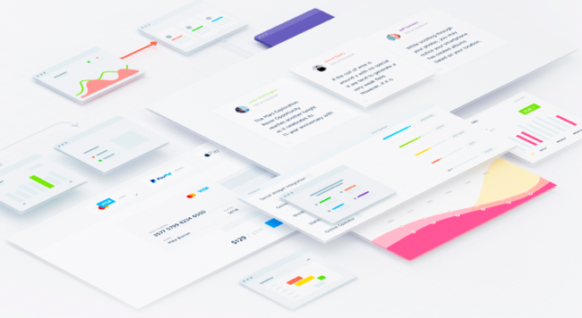

Достаточно длинный заголовок. Прям на три строки, да.
Опубликовано 15 минут назад
Вячеслав рассказывал о стандартах доступности WCAG 2.0 и некоторых их особенностях. На данный момент нет информации об обязательности их применения, стратегия дизайн отдела будет сформулирована позднее. Изучить стандарты в деталях можно.
Заголовок второго уровня
Принципам хорошего дизайна может научиться любой человек. Из этой статьи вы получите базовые знания и практические навыки дизайна, которые сможете применить уже сейчас (и удивить ваших друзей дизайнеров).
Если вы не верите, что можете научиться дизайну, просто вспомните слова легендарного Дэвида Грола (барабанщик в группе Nirvana, гитарист и вокалист FooFighters, прим. ред.) об изучении новых вещей. Цвет фона и текста должны достаточно отличаться, чтобы не вызвать утомления глаз. Обычно чёрный текст на белом фоне читается лучше всего. Держитесь подальше от светло-серых, жёлтых и зелёных тонов. Если вам приходится щуриться, чтобы прочитать текст, то у вас проблемы.
Цвет фона и текста должны достаточно отличаться, чтобы не вызвать утомления глаз. Обычно чёрный текст на белом фоне читается лучше всего. Держитесь подальше от светло-серых, жёлтых и зелёных тонов. Если вам приходится щуриться, чтобы прочитать текст, то у вас проблемы.
Из этой статьи вы получите базовые знания и практические навыки дизайна, которые сможете применить уже сейчас (и удивить ваших друзей дизайнеров).
Из этой статьи вы получите базовые знания и практические навыки дизайна, которые сможете применить уже сейчас (и удивить ваших друзей дизайнеров).
Еще один подзаголовок в статье
Цвет фона и текста должны достаточно отличаться, чтобы не вызвать утомления глаз. Обычно чёрный текст на белом фоне читается лучше всего. Держитесь подальше от светло-серых, жёлтых и зелёных тонов. Если вам приходится щуриться, чтобы прочитать текст, то у вас проблемы.
- Почему бобры?
- Можно использовать уток
- Нарыть енота и не ослепнуть
- Курица — не птица!
Обычно чёрный текст на белом фоне читается лучше всего. Держитесь подальше от светло-серых, жёлтых и зелёных тонов. Если вам приходится щуриться, чтобы прочитать текст, то у вас проблемы.
- Почему бобры?
- Можно использовать уток
- Нарыть енота и не ослепнуть
- Курица — не птица!
Обычно чёрный текст на белом фоне читается лучше всего. Держитесь подальше от светло-серых, жёлтых и зелёных тонов. Если вам приходится щуриться, чтобы прочитать текст, то у вас проблемы.

Design BA
3 комментария
Automation specialist
17 Ноября, в 17:45
ok
Automation specialist
Вчера, в 10:23
В первую очередь мы при личной встрече с представителями интернет-магазина еще более детально, чем в статье, изложили все известные нам факты и наши наблюдения. Вместе с техническим специалистом магазина воспроизвели, как меняется сегмент любого пользователя на сегмент REES. Получили разрешение на использование имени магазина в статье. Затем мы тоже самое проделали с 4 разными сервисными компаниями (дружественными нам и не очень), и только после этого опубликовали нашу статью.
Automation specialist
Час назад
И исторически